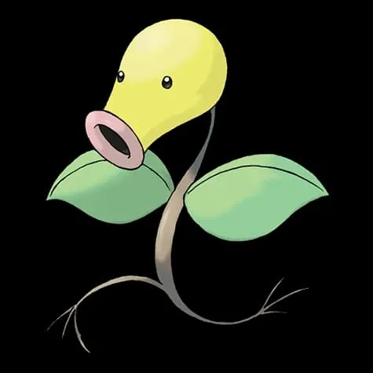
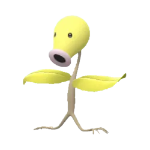
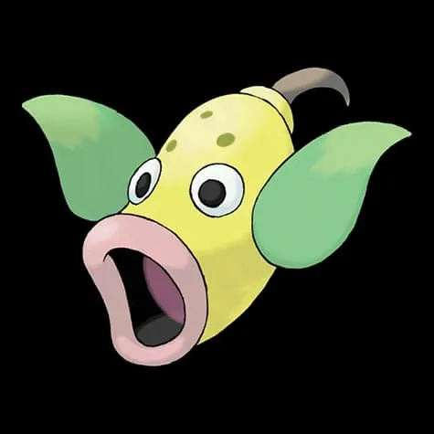
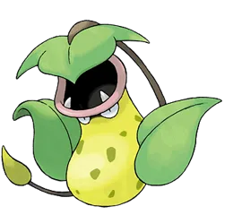
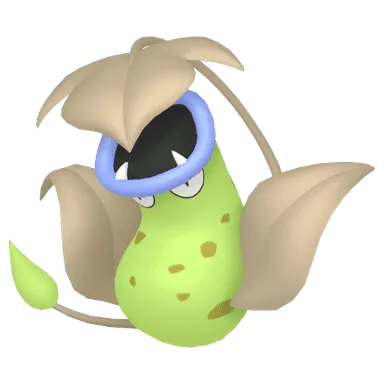
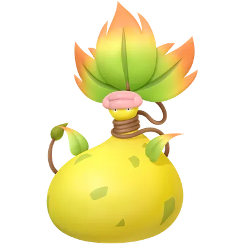
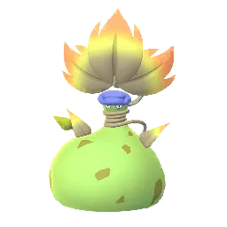

🧭 Quick Navigation
📖 Introduction
The Mega Evolution of Victreebel, Mega Victreebel is a Grass and Poison-type Pokémon that appears as a Mega Raid Boss in Pokémon GO. While it has powerful Grass-type attacks, it also has several weaknesses that skilled trainers can exploit.
Mega Victreebel appears in Super Mega Raids, which are significantly more difficult than standard Mega raids. These battles include shield mechanics that reduce incoming damage. Trainers must use Mega-evolved Pokémon to break these shields before dealing full damage.
Mega Victreebel is particularly vulnerable to strong Fire, Flying, Ice, and Psychic-type attacks. Trainers using powerful Pokémon from these types can defeat the raid boss quickly with a well-prepared team.
Mega Victreebel is useful because:
- It boosts Grass and Poison-type attackers
- It is relatively easy to defeat compared to other Mega Pokémon
This guide explains everything you need to know before battling Mega Victreebel, including the best counters, optimal strategies, weather boosts, and catch CP ranges after completing the raid.
📊 Mega Victreebel Stats
| Type | Grass / Poison |
| Max CP | 3963 |
| Weather Boost | Sunny, Cloudy |
| Shiny | Yes |
| Base Attack | 275 |
| Base Defence | 185 |
| Base Stamina | 190 |
Mega Victreebel focuses heavily on offensive power, so defeating it quickly with the right counters is important.
🎯 Catch CP & 100% IV
In Mega Raids, you catch a normal Victreebel and also earn Mega Energy.
CP Range:
- No Weather Boost: 1,918-2,003 CP
- Weather Boost: 2,397-2,503 CP
100% IV:
- 2003 (Normal)
- 2503 (Weather Boosted)
Use:
- Golden Razz Berry
- Curveball Excellent Throws
Keep in mind that weather-boosted Mega Victreebel is significantly harder to defeat, so always prepare strong Ice, Fire, Flying, or Psychic-type counters.
Raid Difficulty
Mega Victreebel is a high-difficulty raid due to its Super Mega mechanics. Even experienced players need a coordinated group with strong counters to defeat it efficiently.
⚠️ Mega Victreebel Weaknesses
Mega Victreebel is weak to the following types:
| Category | Details |
|---|---|
| ❌ Weak To: |
 Fire • Fire •
 Ice • Ice •
 Flying • Flying •
 Psychic Psychic
|
| ✅ Resistant To: |
 Electric • Electric •
 Water • Water •
 Fairy • Fairy •
 Grass • Grass •
 Fighting Fighting
|
Notes: Mega Victreebel has a double weakness to Fire-type attacks, making Fire Pokémon the most efficient and fastest counters. It also takes strong damage from Flying and Psychic moves.
🗡️ Best Counters for Mega Victreebel
The best way to defeat Mega Victreebel is to use strong Fire-type Pokémon because of its double weakness to Fire.
🔥 Fire-Type Counters (Best Overall Choice)
Because of its double weakness to Fire, Fire-type Pokémon are the strongest and safest option.
- Fire Spin + Blast Burn
- Fire Fang + Overheat
- Mega Fire Pokémon provide strong team-wide boosts
- Blaziken: (Fire Spin / Blast Burn)
- Charizard Y: (Fire Spin / Blast Burn)
- Blacephalon: (Incinerate / Mind Blown)
Very effective in duo raids
Strong raid boss DPS, easy to find
High DPS, fast energy gain
🕊 Flying-Type Counters
Flying-types deal super-effective damage and avoid taking super-effective hits from Grass-type moves.
- Wing Attack + Sky Attack
- Air Slash + Brave Bird
- Salamence: (Fly)
- Ho-Oh: (Brave Bird)
Great duo counter, bulky
Moderate damage, easier to power up
🧠 Psychic-Type Counters
Psychic-types hit the Poison typing for strong damage. Be cautious of potential Dark coverage moves.
- Confusion + Psystrike
- Confusion + Psychic
- Metagross: (Psychic / Zen Headbutt)
- Latios: (Psychic / Zen Headbutt)
- Gardevoir: (Psychic / Confusion)
Less common, but works if high CP
Extremely strong, great for solo raids
Reliable duo counter, easy to use
❄ Ice-Type Counters
Ice-types are effective against Grass typing, but they may faint quickly due to lower bulk.
- Mamoswine: (Powder Snow / Avalanche)
Deal moderate damage. These are secondary options.
Why Fire Types Are Best
Because Mega Victreebel is Grass/Poison-type, it takes super-effective (2×) damage from Fire, Ice, Flying, and Psychic moves, making Fire-type Pokémon some of the best counters.
🏆 Best Regular Counters
Regular pokemon that amplify the right types give you a powerful edge. Below are top Regular counters with short notes on why they excel.
| Pokémon | 🗡️ Fast Moves | 💥 Charged Moves | 🔄 Elite Moves | 🏆 Best Moves | 🧪 Why This Counter Works |
|---|---|---|---|---|---|
| Salamence | Fire Fang / Dragon Tail / Bite | Fly / Fire Blast / Hydro Pump / Draco Meteor / Brutal Swing / Crunch | Outrage | Fire Fang and Fly | Fire Fang exploits Mega Victreebel’s double weakness to Fire, while Fly provides strong Flying-type coverage against its Grass typing. |
| Black Kyurem | Shadow Claw / Dragon Tail | Stone Edge / Blizzard / Iron Head / Outrage / Fusion Bolt / Freeze Shock | None | Ice Fang and Freeze Shock | Ice-type attacks hit Mega Victreebel’s Grass typing for super-effective damage, making Black Kyurem a powerful secondary option. |
| Reshiram | Fire Fang / Dragon Breath | Stone Edge / Overheat / Draco Meteor / Crunch | Fusion Flare | Fire Fang and Overheat | Fire Fang and Overheat take full advantage of Mega Victreebel’s double weakness to Fire, delivering extremely high DPS. |
| Rayquaza | Air Slash / Dragon Tail | Aerial Ace / Dragon Ascent / Ancient Power / Outrage | Hurricane / Breaking Swipe | Air Slash and Dragon Ascent | Flying-type Dragon Ascent deals strong super-effective damage while Rayquaza’s high attack stat ensures fast clear times. |
| Mewtwo | Psycho Cut / Confusion | Focus Blast / Flamethrower / Thunderbolt / Psychic / Ice Beam | Hyper Beam / Shadow Ball / Psystrike | Confusion and Psystrike | Psychic-type Psystrike hits the Poison typing for super-effective damage, making Mewtwo one of the strongest non-Fire counters. |
| White Kyurem | Dragon Breath / Steel Wing / Ice Fang | Ancient Power / Blizzard / Dragon Pulse / Focus Blast / Fusion Flare / Ice Burn | None | Ice Fang and Ice Burn | Ice Fang and Ice Burn exploit Victreebel’s Grass typing weakness, delivering heavy super-effective damage. |
| Blacephalon | Astonish / Incinerate | Shadow Ball / Mystical Fire / Overheat | None | Incinerate and Overheat | Incinerate and Overheat capitalize on the double Fire weakness, providing some of the highest Fire-type DPS available. |
👤 Best Shadow Counters
Shadow pokemon that amplify the right types give you a powerful edge. Below are top Shadow counters with short notes on why they excel.
| Pokémon | 🗡️ Fast Moves | 💥 Charged Moves | 🔄 Elite Moves | 🏆 Best Moves | 🧪 Why This Counter Works |
|---|---|---|---|---|---|
| Shadow Mewtwo | Psycho Cut / Confusion | Focus Blast / Flamethrower / Thunderbolt / Psychic / Ice Beam | Hyper Beam / Shadow Ball / Psystrike | Psycho Cut and Psystrike | Shadow boost increases Psystrike’s damage output, making it one of the highest DPS counters against Mega Victreebel. |
| Shadow Salamence | Fire Fang / Dragon Tail / Bite | Fly / Fire Blast / Hydro Pump / Draco Meteor / Brutal Swing / Crunch | Outrage | Fire Fang and Fly | Fire Fang benefits from both Shadow boost and double Fire weakness for extremely fast damage output. |
| Shadow Heatran | Bug Bite / Fire Spin | Earth Power / Stone Edge / Iron Head / Fire Blast / Flamethrower | Magma Storm | Fire Spin and Fire Blast | Fire Spin and Fire Blast exploit the double Fire weakness while Heatran resists Poison-type moves. |
| Shadow Moltres | Wing Attack / Fire Spin | Ancient Power / Fire Blast / Heat Wave / Overheat | Sky Attack | Fire Spin and Overheat | Fire Spin and Overheat hit for double super-effective damage, and the Shadow boost further increases DPS. |
| Shadow Toucannon | Rock Smash / Peck / Bullet Seed | Drill Peck / Rock Blast / Flash Cannon | Beak Blast | Peck and Drill Peck | Peck and Drill Peck provide consistent Flying-type damage against Grass typing. |
| Shadow Regigigas | Hidden Power / Zen Headbutt | Giga Impact / Focus Blast / Thunder | Crush Grip | Zen Headbutt and Crush Grip | Provides neutral damage but is not optimal compared to Fire or Psychic counters. |
| Shadow Chandelure | Hex / Fire Spin / Incinerate | Shadow Ball / Overheat / Flame Charge / Energy Ball | Poltergeist | Incinerate and Overheat | Incinerate and Overheat take advantage of double Fire weakness while Shadow boost amplifies DPS. |
| Shadow Latios | Zen Headbutt / Dragon Breath | Aura Sphere / Solar Beam / Psychic / Dragon Claw | Luster Purge | Zen Headbutt and Psychic | Psychic-type moves exploit Poison typing while Shadow boost enhances damage output. |
| Shadow Metagross | Fury Cutter / Bullet Punch / Zen Headbutt | Earthquake / Flash Cannon / Psychic | Shadow Claw / Meteor Mash | Zen Headbutt and Psychic | Psychic-type damage hits Poison typing for super-effective damage while Shadow boost increases DPS. |
| Shadow Ho-Oh | Hidden Power / Steel Wing / Incinerate / Extrasensory | Brave Bird / Fire Blast / Solar Beam | Earthquake / Sacred Fire | Brave Bird and Sacred Fire | Sacred Fire deals double super-effective Fire damage and benefits from Shadow’s attack boost. |
| Shadow Delphox | Scratch / Fire Spin / Zen Headbutt | Flamethrower / Flame Charge / Fire Blast / Mystical Fire / Psychic / Payback | Blast Burn | Fire Spin and Fire Blast | Fire Spin and Fire Blast exploit the double Fire weakness for strong sustained DPS. |
| Shadow Blaziken | Counter / Fire Spin / Ember | Focus Blast / Aura Sphere / Brave Bird / Overheat / Blaze Kick | Stone Edge / Blast Burn | Fire Spin and Blast Burn | Fire Spin and Blast Burn maximize Fire-type DPS against Mega Victreebel’s double weakness. |
| Shadow Charizard | Air Slash / Fire Spin | Air Cutter / Fire Blast / Overheat / Dragon Claw | Wing Attack / Ember / Dragon Breath / Blast Burn / Flamethrower | Fire Spin and Overheat | Fire Spin and Overheat deal heavy Fire-type damage while Shadow boost increases overall raid DPS. |
⚡ Best Mega Counters
Mega pokemon that amplify the right types give you a powerful edge. Below are top Mega counters with short notes on why they excel.
| Pokémon | 🗡️ Fast Moves | 💥 Charged Moves | 🔄 Elite Moves | 🏆 Best Moves | 🧪 Why This Counter Works |
|---|---|---|---|---|---|
| Mega Gardevoir | Magical Leaf / Charge Beam / Confusion / Charm | Shadow Ball / Psychic / Triple Axel / Dazzling Gleam | Synchronoise | Confusion and Psychic | Confusion and Psychic exploit the Poison typing while Mega Evolution boosts Psychic-type allies. |
| Mega Rayquaza | Air Slash / Dragon Tail | Aerial Ace / Dragon Ascent / Ancient Power / Outrage | Hurricane / Breaking Swipe | Air Slash and Dragon Ascent | Dragon Ascent provides powerful Flying-type damage while Mega Rayquaza boosts Flying-type teammates. |
| Mega Charizard X | Air Slash / Fire Spin | Dragon Claw / Fire Blast / Air Cutter / Overheat | Dragon Breath / Ember / Wing Attack / Flamethrower / Blast Burn | Fire Spin and Overheat | Fire Spin and Overheat take advantage of double Fire weakness while boosting Fire-type allies. |
| Mega Charizard Y | Air Slash / Fire Spin | Dragon Claw / Fire Blast / Air Cutter / Overheat | Dragon Breath / Ember / Wing Attack / Flamethrower / Blast Burn | Fire Spin and Overheat | Mega Charizard Y provides one of the strongest Fire-type boosts while dealing extremely high Fire DPS. |
| Mega Gallade | Low Kick / Confusion / Psycho Cut / Charm | Close Combat / Leaf Blade / Psychic | Synchronoise | Confusion and Psychic | Psychic-type attacks hit Poison typing effectively while Mega Evolution boosts Psychic teammates. |
| Mega Latios | Dragon Breath / Zen Headbutt | Dragon Claw / Psychic / Solar Beam / Aura Sphere | Luster Purge | Zen Headbutt and Psychic | Psychic-type damage exploits Poison typing while boosting other Psychic attackers. |
| Mega Alakazam | Psycho Cut / Confusion | Focus Blast / Shadow Ball / Fire Punch / Future Sight | Counter / Psychic / Dazzling Gleam | Confusion and Psychic | Confusion and Psychic provide very high Psychic-type DPS against Poison typing. |
| Mega Salamence | Fire Fang / Dragon Tail / Bite | Fly / Fire Blast / Hydro Pump / Draco Meteor / Brutal Swing / Crunch | Outrage | Fire Fang and Fly | Fire Fang exploits double Fire weakness while Mega Evolution boosts Flying-type teammates. |
| Mega Blaziken | Counter / Fire Spin / Ember | Focus Blast / Aura Sphere / Brave Bird / Overheat / Blaze Kick | Stone Edge / Blast Burn | Fire Spin and Blast Burn | Mega Blaziken delivers extremely high Fire-type DPS and boosts Fire teammates for faster raid clears. |
Strategy Guide
Focus on using Fire and Flying-type attackers to exploit Mega Victreebel’s weaknesses. Using Mega Evolution boosts significantly increases team damage and helps break shields faster. Avoid using Water and Grass-type Pokémon, as they are resisted. Coordinated attacks and weather boosts can greatly reduce raid time.
💊 Revive & Potion Cost
- Average revives used: 8–14
- Average potions used: 10–18
- Dodging significantly reduces resource usage
- Using Mega Pokémon reduces total relobbies
❌ Common Raid Mistakes
- Not bringing a Mega Pokémon for team boosts
- Using weather-boosted Pokémon of the wrong type
- Relobbying too late and losing damage time
- Ignoring dodging during hard-hitting moves
🧩 Best Team Compositions
🔥 Fast Clear Team (2–4 Trainers)
- Mega Charizard Y (Fire Spin + Blast Burn)
- Reshiram
- Mega Blaziken
- Shadow Moltres (Fire Spin + Overheat)
- Mewtwo (Confusion + Psystrike)
- Rayquaza (Air Slash + Hurricane)
🛡 Balanced Team
- Mega Charizard Y (Fire Spin + Blast Burn)
- Mewtwo (Confusion + Psystrike)
- Rayquaza (Air Slash + Hurricane)
- Chandelure
- Togekiss
- Blaziken
👥 Raid Difficulty & Trainers Needed
- 2 Trainers: Easy with strong Fire counters
- 3 Trainers: Very comfortable clear
- 4+ Trainers: Extremely safe
Mega Victreebel is not among the toughest Mega raids. Well-prepared trainers can defeat it quickly with optimized teams.
🧠 Raid Strategy
1. Focus on Fire Damage
Prioritize high-DPS Fire Pokémon to exploit the double weakness. This dramatically reduces clear time.
2. Avoid Water and Electric Types
Mega Victreebel resists both Water and Electric moves, making them poor counter choices.
3. Coordinate Mega Evolutions
Activating a Mega Fire Pokémon early increases team-wide Fire damage and speeds up the raid significantly.
Mega Victreebel’s Grass and Poison typing makes it especially weak to Fire, Psychic, Ice, and Flying-type attacks. Trainers should focus on Pokémon that not only exploit these weaknesses, but also survive Victreebel’s charged moves. Pokémon such as Chandelure, Mewtwo, and Moltres with strong Fire or Psychic charged attacks can deal significant damage while resisting key incoming moves.
Weather conditions play a meaningful role in this fight. In Sunny or Clear weather, Fire-type moves receive a boost — making Fire counters especially powerful. In Windy conditions, Flying-type moves also get boosted, which increases the effectiveness of counters like Staraptor or Honchkrow. Trainers should check the weather before the raid and adjust team composition accordingly to maximize damage output.
Dodging charged moves like Sludge Bomb and Leaf Storm can improve your team’s survival, especially during solo or small-group attempts. While not every move needs to be dodged, avoiding the highest-damage charges gives your counters more time to deal damage. It’s often valuable to lead with your fastest DPS counters and then rotate in bulkier secondary attackers as needed.
For best results, coordinate your battle plan with other trainers when possible. Assign roles so that the highest DPS counters go in first and are supported by Pokémon with greater durability. This balanced approach helps extend team life while keeping DPS high. With a thoughtful team composition and strategic play, Mega Victreebel becomes a much more manageable raid challenge.
🌦️ Weather Boost
Mega Victreebel gets a weather boost in:
☀️ Sunny Weather
- Boosts Grass-type moves and Fire-type counters
🌬️ Windy Weather
- Boosts Flying & Psychic-type counters
🌨️ Snowy Weather
- Boosts Ice-type counters
☁️ Cloudy Weather
- Boosts Poison-type moves
🌀 Mega Victreebel Moveset
🗡️ Fast Moves
- Razor Leaf
- Acid
💥 Charged Moves
- Sludge Bomb
- Solar Beam
- Leaf Blade
- Acid Spray
- Leaf Tornado
🔄 Elite Moves
- Magical Leaf
🎮 Is Mega Victreebel Good in PvE and PvP?
PvE (Raids)
Mega Victreebel is a strong Grass-type Mega evolution that boosts Grass and Poison-type attacks in raids. However, other Mega Pokémon like Mega Venusaur or Mega Sceptile may perform better.
PvP
Victreebel is mostly used in Great League in its Shadow form, where it can deal extremely fast damage with Razor Leaf.
✨ Can Mega Victreebel Be Shiny in Pokémon GO?
Yes, trainers have a chance to encounter a Shiny Victreebel after defeating Mega Victreebel in a raid battle. While Mega Victreebel itself cannot be caught directly, players will encounter Victreebel after the raid, which may appear in its shiny form.
Shiny Victreebel has a lighter green body with noticeable color differences compared to the normal version, making it a valuable addition for collectors and shiny hunters in Pokémon GO.
Participating in multiple raids increases the chance of encountering a shiny Victreebel, as Mega Raids generally have higher shiny rates than wild encounters.
Evolution, Mega Details & Buddy Distance
| Evolution Line | Base(Bellsprout) → Stage(Weepinbell) → Final(Victreebel) → Mega(Victreebel) |
| Mega Energy (First) | 300 |
| Subsequent Cost | 60 |
| Buddy Distance | 3 km |
| Mega Energy via Buddy | Yes |
| Mega Boost Bonus(Walking) | Extra Candy |
| Mega Boost Bonus(Catch) | Extra Grass/Poison-type Candy |
| Mega Boost Bonus(Buddy^) | 25 Mega Energy per candy |
🚶 Buddy Distance
3 km (per Pokémon GO buddy distance)
⚖️ Shadow & Mega Comparison
🧬 Best Mega Evolutions
Recommended Megas to use against Mega Victreebel:
- Blaziken, Charizard Y, Charizard X, Salamence – 🔥 Fire boost
- Gardevoir, Gallade, Latios, Alakazam – 🔮 Psychic boost
- Salamence, Rayquaza - 🕊️ Flying boost
📌 Is Mega Victreebel Worth Raiding?
Mega Victreebel provides Mega Energy and can be useful in certain PvE situations, but it is not considered a top-tier Grass attacker compared to other Mega evolutions. Raid primarily for Mega Energy collection and Pokédex completion.
Pro Tips
- Use Mega Charizard Y or Mega Rayquaza to boost team damage.
- Bring Mega Pokémon in every team to break shields efficiently.
- Join raids with at least 8 trainers to ensure success.
🎁 Raid Rewards
After defeating Mega Victreebel in a Mega Raid in Pokémon GO, trainers receive a variety of rewards including items, experience points, and a chance to catch Victreebel. The exact rewards may vary depending on raid performance, team contribution, and friendship bonuses.
| Reward | Typical Amount |
|---|---|
| Golden Razz Berry | 3 – 12 |
| Rare Candy | 2 – 6 |
| Revive | 6 – 12 |
| Hyper Potion | 6 – 12 |
| Fast TM | 0 – 2 |
| Charged TM | 0 – 2 |
| Stardust | 1000 |
Mega Energy Reward
Defeating Mega Victreebel will also reward trainers with Victreebel Mega Energy. The amount of Mega Energy earned depends on how quickly the raid boss is defeated.
| Raid Completion Speed | Mega Energy Earned |
|---|---|
| Very Fast Clear | 80 – 90 Mega Energy |
| Average Clear | 60 – 70 Mega Energy |
| Slow Clear | 50 – 60 Mega Energy |
Premier Balls for Catch Encounter
After completing the raid, trainers receive Premier Balls to catch Victreebel. The number of balls depends on:
- Damage dealt during the raid
- Gym control bonus
- Friendship bonus
- Team contribution
Typically, players receive 8–16 Premier Balls to attempt the catch.
🖼️ Regular vs Shiny Mega Victreebel Forms
Shiny Victreebel has a lighter green body with noticeable color differences compared to the normal version.

Bellsprout

Shiny Bellsprout

Weepinbell

Victreebel

Shiny Victreebel

Mega Victreebel

Shiny Mega Victreebel
❓ FAQ
Can Mega Victreebel be shiny in Pokémon GO?
Shiny Victreebel has been released in raids or events.
Is Mega Victreebel difficult to defeat?
It has high attack and decent speed but relatively low bulk. Using type-advantage Pokémon ensures efficient and safe battles.
Can it be duoed?
Yes, high-level Fire-type teams can defeat it with two trainers.
Best Mega boost support?
Mega Fire-type Pokémon boost team-wide Fire damage.
Does Mega Victreebel keep its Mega form after the battle?
Mega Evolution lasts only during battles where Mega is enabled; it does not persist outside combat.
What makes Mega Victreebel unique?
Its fast and aggressive Mega form, Grass/Poison typing, and strong offensive stats make Mega Victreebel visually striking and strategically valuable in Max Raid Battles.
What is Mega Victreebel’s exclusive move?
Mega Victreebel can use moves like Leaf Blade and Sludge Bomb, dealing massive Grass and Poison-type damage to opponents in Max Raid Battles.
🏁 Conclusion
Mega Victreebel is a moderately difficult Mega Raid boss with a major double weakness to Fire-type moves. Bring strong Fire attackers for the fastest clear, and use Flying or Psychic types as secondary options. Proper Mega coordination makes this a smooth and quick raid.
⚡Quick picks
- Best Mega Team: Blaziken, Rayquaza, Charizard Y
- Best Shadow Team: Mewtwo, Salamence
- Best Regular Team: Blacephalon, White Kyurem